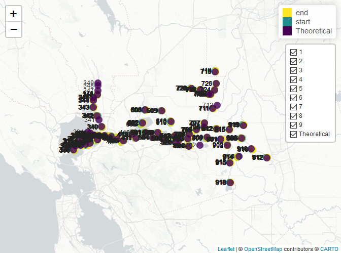
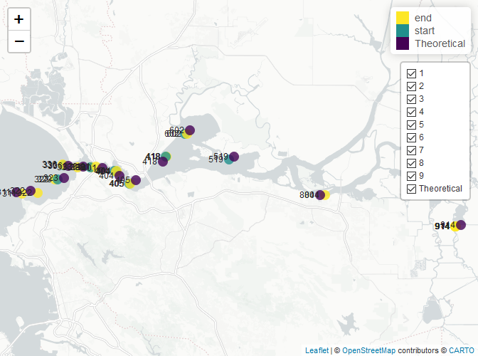

This package contains various workflow functions for working with data within the Sacramento-San Joaquin River Delta. There is a primary focus on IEP (Interagency Ecological Program) Surveys and supporting their data publication workflows. Additional features pertaining to other surveys may be supported in the future.
The following is a case study using tools in this package to help QAQC the 20 mm Survey Access database, a yearly process that precedes data publication.
Installing the package
The deltadata package can be installed from its GitHub repository.
# Install `devtools` if we need to
install.packages("devtools")
# Installing `deltadata` if we do not already have it
devtools::install_github("trinhxuann/deltadata")Reading in your data
The bridgeAccess() function is our primary tool to download, connect to, and extract data tables from an Access database. However, there is a prerequisite that we must fulfill.
Prerequisite to enable bridgeAccess()
The function requires that the architectures of our R and Microsoft Access be the same, i.e., 32 vs 64-bit. To help users, the function automatically checks for this requirement before proceeding. If the architectures are not the same, an interpretable error will inform the user. For most state computers, we have 32-bit Microsoft Access installed. Unfortunately, the newest versions of R only come in 64-bit. Therefore, you have two potential solutions:
- Download 32-bit R to match your 32-bit Office. The latest version of R that supports 32-bit is version 4.1.3. Although this version is older, I have yet to run into any compatability issues with packages. Once installed,
bridgeAccess()will simply use this extra instance in the background, allowing you stay working in 64-bit R–you should never have to open or use the 32-bit R yourself. - Install 64-bit Office. This likely requires installation by your IT department. The entire Microsoft Office will need to be installed, as I don’t think you can just install 64-bit Access. This solution is more future proof and does not require a separate install of R.
We can replicate the architecture check using an internal function of the package:
# This function is ran internally in bridgeAccess()
deltadata:::architectureCheck()
#> $check
#> [1] FALSE
#>
#> $rBit
#> [1] "x64"
#>
#> $officeBit
#> [1] "x32"The function determines that my architectures do not align, that I am in 64-bit R but have 32 bit Office. This does not automatically throw an error. The function will attempt to find and use my 32-bit R to proceed–an error is only thrown if I do not have 32-bit installed.
Connecting to your Access database
The first argument of bridgeAccess() is the path to your file. This argument is flexible and can take a filepath to the file on your hard drive or a URL to a file online. The file must be an Access database or a compressed file (e.g., .zip) with the Access database inside. If the Access database needs to be downloaded from a URL or extracted from a compressed file, the file will be downloaded to the temporary folder (it will be deleted after R is shut down).
We will download the 20 mm from the FTP website, opting for the .zip version. The function will download the file, extract it, and provide us with a list of table names to choose from. If you rerun the function and the file has already been downloaded, the function will skip downloading the file again.
bridgeAccess("https://filelib.wildlife.ca.gov/Public/Delta%20Smelt/20mm_New.zip")
#> Extracting file: '20mm_New.accdb' from the zip file.Extracting your tables of interest
Once you have connected to your Access database, the table argument allows you to specify which tables you would like to read into R. If you do not know, leave this argument blank and the function will return the names of the available data tables for you to specify (as shown above). Once specified, all tables will be read into R in a list format.
The 20 mm has five main relational tables needed for QAQC. We can specify them here:
relationalTables <- bridgeAccess(file = "https://filelib.wildlife.ca.gov/Public/Delta%20Smelt/20mm_New.zip",
tables = c("Station", "Survey", "Tow", "Gear", "20mmStations"))We can also download the system relationship table. This is an important table that records the relationships between the relational tables in the database. We can leverage this table to automatically and reliably join the relational tables with one another. However, this table does require special permissions to download and may break your database if you modify it. Although this is very hard to do, I recommend you always work from a copy of your database and to work only through R.
This table is named MSysRelationships. Once fed into bridgeAccess(), the Access file will be opened and a message will be provide with instructions to enable permissions: in the program, “Enable content, Ctrl + g, enter CurrentProject.Connection.Execute "GRANT SELECT ON MSysRelationships TO Admin;", Enter, exit file, and rerun this code.”
schema <- bridgeAccess(
"https://filelib.wildlife.ca.gov/Public/Delta%20Smelt/20mm_New.zip",
tables = c("MSysRelationships"),
retry = T # The retry argument will rerun the function again after 25 seconds
)
# The function outputs a list, of which we can index to grab just the table
schema <- schema[[1]]Data joining
The relational tables must be tied together before we can properly QAQC the data. To do this, we can use the schemaJoin() function to decipher the relationship table we downloaded above and join the tables. Although we can join the tables by hand, I prefer using schemaJoin() as it relies entirely on the outlined relationships in the database, allowing us a way to consistently join the tables correctly (assuming the database is set up correctly in the first place!).
joinedData <- schemaJoin(schema, relationalTables)
#> inner_join 'Survey' with 'Station' via columns 'SurveyID' and 'SurveyID'
#> inner_join 'Station' with 'Tow' via columns 'StationID' and 'StationID'
#> inner_join 'Tow' with 'Gear' via columns 'TowID' and 'TowID'Throughout the joining process, the function provides a narration of the join type, the tables being joined, and the column keys the join is occurring on. We can use this narration to ensure that we are getting the joins we are expecting. Once our relational tables are joined, we can proceed with QAQC-ing the dataset.
Data QAQC
The package supports various QAQC operations that have been duplicated from or requested by the CDFW IEP surveys. I would like to incorporate operations from other surveys as well as part of a larger effort to create a more robust and standardized QAQC workflow that all IEP surveys can leverage.
Checking outlying GPS coordinates
There are two functions dedicated to visualizing and detecting GPS coordinates that are too far from the desired sampling location:
-
plotGPS(): plots GPS coordinates on a leaflet map. Requires a data frame with 6 columns,date,station,legend,layer,lat, andlon.Thelegendcolumn should contain the legend labels for the plotted points, and it is recommended that one group be the “Theoretical” coordinates of each sampling station. Thelayercolumn is used in the layer control (toggling the display of a layer) and is generally the survey number. See?plotGPS()for more information. -
gpsOutlier(): returns a data frame of GPS coordinates that are beyond a specified distance (default is 0.5 mile, measured “as-the-crow-flies”, or the most direct path) from each sampling location’s theoretical coordinates. This function similarly requires a data frame with 6 columns, the same asplotGPS(), with a firm requirement for aTheoretical(named as so) group of GPS coordinates in thelegendcolumn.
A recommended workflow is to find outlying data points with gpsOutlier() then visualize those points with with plotGPS().
Below, we explore the 20 mm 2023 sampling season for outlying sampling points. For CDFW surveys, sampling points 0.5 miles away from the theoretical sampling point are deemed potentially outlying.
filteredData <- joinedData
# Filter for 2023 season
filteredData$SeasonYear <- as.numeric(format(filteredData$SampleDate, format = "%Y")) +
(as.numeric(format(filteredData$SampleDate, format = "%m")) > 11)
filteredData <- subset(filteredData, SeasonYear == 2023)
# Add in lat and lon of the sampling locations
filteredData <- transform(filteredData,
startLatitude = decimalDegrees(paste(StartLatDeg, StartLatMin, StartLatSec), "dms"),
startLongitude = decimalDegrees(paste(StartLonDeg, StartLonMin, StartLonSec), "dms", isLongitude = T),
endLatitude = decimalDegrees(paste(EndLatDeg, EndLatMin, EndLatSec), "dms"),
endLongitude = decimalDegrees(paste(EndLonDeg, EndLonMin, EndLonSec), "dms", isLongitude = T))
# Fix the table with the theoretical sampling points. Convert to lat/lon in decimal degrees
officialGPS <- data.frame(
station = relationalTables$`20mmStations`$Station,
lat = decimalDegrees(paste(
relationalTables$`20mmStations`$LatD,
relationalTables$`20mmStations`$LatM,
relationalTables$`20mmStations`$LatS
), type = "dms"),
lon = decimalDegrees(paste(
relationalTables$`20mmStations`$LonD,
relationalTables$`20mmStations`$LonM,
relationalTables$`20mmStations`$LonS
), type = "dms", isLongitude = T),
date = NA,
legend = "Theoretical",
layer = "Theoretical"
)
# Stack to long format
gpsDF <- data.frame(
# R recycles rows as long as the vectors are multiples of each other
date = filteredData$SampleDate,
station = filteredData$Station,
legend = rep(c("start", "end"), each = nrow(filteredData)),
layer = filteredData$Survey,
lat = c(filteredData$startLatitude, filteredData$end_latitude),
lon = c(filteredData$startLongitude, filteredData$endLongitude)
)
# Removing duplicates, e.g., multiple fish catches per tow
gpsDF <- unique(gpsDF)
# Add in the theoretical as a legend
gpsDF <- rbind(
gpsDF,
officialGPS
)
# Plot it
plotGPS(gpsDF, layerName = "Survey", dateName = "Sampling Date", height = 500)
This interactive (disabled for the README) plot allows us to visualize all sampling points of interest at once. This is most helpful for identifying significantly outlying points, e.g., outside of the Delta. We can click on any point of interest and a pop-up will appear with layer (here, the survey) and sampling date information. Although this step is useful for a quick glance at our points, we can do a specific search for only potentially outlying points using gpsOutlier() and then feeding those points into plotGPS().
# By default, d = 0.5
gpsOutliers <- gpsOutlier(gpsDF)
plotGPS(gpsOutliers, height = 500)
This creates a much cleaner map. The resulting data frame also contains the distance from the theoretical sampling point, in case your distance is not a strict threshold.
head(gpsOutliers)
#> date station legend layer lat lon lonTheoretical
#> 2970 2023-03-28 323 end 2 38.04039 -122.3035 -122.2863
#> 2894 2023-03-30 338 end 2 38.05886 -122.2320 -122.2489
#> 1153 2023-05-09 405 start 5 38.03381 -122.1600 -122.1467
#> 3955 2023-06-07 322 end 7 38.01992 -122.3362 -122.3508
#> 3236 2023-05-09 405 end 5 38.03381 -122.1587 -122.1467
#> 811 2023-03-30 338 start 2 38.05886 -122.2356 -122.2489
#> latTheoretical distance outlier
#> 2970 38.04289 0.9521133 TRUE
#> 2894 38.06003 0.9260127 TRUE
#> 1153 38.03992 0.8366965 TRUE
#> 3955 38.02364 0.8346230 TRUE
#> 3236 38.03992 0.7760053 TRUE
#> 811 38.06003 0.7330460 TRUEComparing water quality values to CDEC gages
Many IEP surveys collect water quality data in addition to fish data. One way to QAQC this water quality data is to compare to nearby continuous sondes. We can do this with the popCDEC() function. This function will fetch surface (default) or bottom water temperature, turbidity, or electro-conductivity data from the nearest CDEC (California Data Exchange Center) station.
# For the 20 mm, water quality is taken at the beginning of the first tow (out of 3)
temperatureData <- data.frame(
time = as.POSIXct(paste(filteredData$SampleDate,
format(filteredData$TowTime, "%H:%M:%S")),
format = "%Y-%m-%d %H:%M:%S",
tz = "America/Los_Angeles"),
station = filteredData$Station,
lat = filteredData$startLatitude,
lon = filteredData$startLongitude,
temp = filteredData$Temp
)
temperatureData <- temperatureData[!duplicated(temperatureData[, c("station", "lat", "lon", "temp")]), ]
# Remove NAs
temperatureData <- na.omit(temperatureData)
# Now, we can populate the data frame with the required data. Depending on how large our data frame is, this can take several minutes.
temperatureOutlierCdec <- popCDEC(temperatureData, variable = "temp")
#> Reading from: https://cdec.water.ca.gov/dynamicapp/req/CSVDataServlet?Stations=OSJ,BIR,FCT,BET,HOL,PRI,TRN,RRI,BAC,LPS,DWS,LIB,TOE,HWB,TMS,MIR,UCS,C24,PCT,C31,PTS,ANH,BDL,NSL,VOL,GZL,OH4,FRK,TWI,SOI,HON,MAL,FLT,SJJ,MRZ,MOK,WCI,BLL,IBS,M13&SensorNums=25&dur_code=E&Start=2023-03-13&End=2023-07-08
#> Reading from: https://cdec.water.ca.gov/dynamicapp/req/CSVDataServlet?Stations=JER,STI,BKS,EMM,ANC,CPP,CLL&SensorNums=25&dur_code=H&Start=2023-03-13&End=2023-07-06
head(temperatureOutlierCdec)
#> time station lat lon temp cdecStation tempCDEC
#> 24 2023-03-15 09:34:00 815 38.08392 -121.5714 11.0 OSJ 11.50000
#> 9 2023-03-13 13:05:00 914 37.97153 -121.5209 12.1 BIR 11.77778
#> 420 2023-03-13 08:45:00 809 38.05289 -121.6926 10.5 JER 10.55556
#> 26 2023-03-15 10:30:00 812 38.09003 -121.6395 11.0 FCT 11.22222
#> 2 2023-03-13 09:43:00 901 38.04700 -121.6198 11.1 BET 11.55556
#> 4 2023-03-13 10:35:00 902 38.02303 -121.5831 11.7 HOL 11.61111
#> timeDifference distance sensorNumber sensorDescription units
#> 24 4 0.9729511 25 TEMPERATURE, WATER, DEG F DEG C
#> 9 5 2.0880878 25 TEMPERATURE, WATER, DEG F DEG C
#> 420 15 0.2063425 25 TEMPERATURE, WATER, DEG F DEG C
#> 26 0 1.6144262 25 TEMPERATURE, WATER, DEG F DEG C
#> 2 2 0.7900384 25 TEMPERATURE, WATER, DEG F DEG C
#> 4 5 0.4620903 25 TEMPERATURE, WATER, DEG F DEG C
#> duration dataAvailable
#> 24 event 05/19/2006 to present
#> 9 event 03/02/2018 to present
#> 420 hourly 02/25/1999 to present
#> 26 event 04/20/2015 to present
#> 2 event 03/29/2006 to present
#> 4 event 06/26/2006 to presentThe function returns the desired water quality data from the nearest CDEC station for each sampling point, in terms of space (as-the-crow-flies) and time (the closest non-NA value is returned). The function also reports back various metadata: the nearest CDEC station (cdecStation), the time difference in minutes between the sample of interest and the CDEC sample (timeDifference), the distance in miles between the sampling point and the CDEC station (distance), and other metadata information about the CDEC station (sensorNumber, sensorDescription, units, duration, dataAvailable).
All-in-one function
The qaqcData() function is an experimental function that attempts to apply various QAQC operations to an IEP dataset all in one simple function call. Currently, the function is modeled on the CDFW IEP survey QAQC procedures. Although the function may work on other IEP surveys, it has only been tested with the CDFW IEP surveys. The function runs several QAQC operations on an inputted data set:
- outlying GPS points, defaulting to 0.5 mile away from the theoretical,
- inconsistent cable lengths that are expected based on the sampling depth,
- outlying flow meter readings that are based on the sampling duration,
- outlying water quality values (water temperature, Secchi, turbidity, electro-conductivity, and salinity) that are two standard deviations beyond the mean (per station and per station per month),
- and missing data points in the previously mentioned operations.
Each of these operations are optional and are only ran if the supporting arguments are provided:
- gps outliers requires a table of theoretical gps coordinates of each station, provided to the
officialGPSargument, - cable length outliers require a tow schedule, provided to the
towScheduleargument, - flow meter reading outliers require a table of expected ranges, provided to the
meterScheduleargument, - and outlying water quality values require the column to exist in the inputted data frame.
The package currently store tow and meter schedules of various CDFW IEP surveys for ease of use. These are available as deltadata::towSchedule and deltadata::meterSchedule. More surveys will be added to the package as this information becomes available. Users can specify their own schedules by modeling them against these existing ones.
We can demonstrate this function with the 20 mm database:
# Create the tow schedule for the 20 mm. This is also available in the package as towSchedule$ttmm
towSchedule <- data.frame(
duration = c(2.5, 5, 10)[1:7],
maxDepth = c(10, 13, 17, 21, 26, 32, Inf),
depth = cut(c(10, 13, 17, 21, 26, 32, Inf),
breaks = c(0, 10, 13, 17, 21, 26, 32, Inf),
right = T, include.lowest = T),
cableLength = c(75, 100, 125, 150, 175, 200, 225)
)
# Create the meter schedule for the 20 mm. This is also available in the package as meterSchedule$ttmm
meterSchedule <- data.frame(
duration = c(2.5, 5, 10, 5, 10),
meterMin = c(NA, 5000, 10000, 2500, 5000),
meterMax = c(NA, 15000, 30000, 15000, 25000),
gear = c(NA, 2, 2, 1, 1)
)
# The function requires a joined database. We did this earlier using schemaJoin()
# We also must specify a year and survey that is being inputted.
ttmmQAQC <- qaqcData(data = joinedData, year = 2023, survey = "20mm",
officialGPS = officialGPS, gpsDistance = 0.5, startingGPSFormat = "dms", # officialGPS was defined previously
towSchedule = towSchedule,
meterSchedule = meterSchedule)The function returns all results as part of a list, separating the outlying and the NA data points into their own data frames.
names(ttmmQAQC)
#> [1] "gpsPlot" "outlierGPS" "outlierCableLength"
#> [4] "outlierMeterCount" "outlierDuration" "waterQuality"
#> [7] "missingData"
# Outlying water temperature data, per station per month, for 2023
temperatureOutliers <- ttmmQAQC$waterQuality$StationCode_Month$WaterTemperatureTop
head(temperatureOutliers)
#> Station Month SampleDate Survey TowTime Temp mean sd
#> 130 323 3 2023-03-28 2 1899-12-30 16:20:00 9.0 12.95152 1.4878930
#> 131 323 3 2023-03-28 2 1899-12-30 16:35:00 9.0 12.95152 1.4878930
#> 132 323 3 2023-03-28 2 1899-12-30 16:00:00 9.0 12.95152 1.4878930
#> 285 336 5 2023-05-09 5 1899-12-30 08:13:00 15.1 17.04615 0.8875201
#> 287 336 5 2023-05-09 5 1899-12-30 08:40:00 15.1 17.04615 0.8875201
#> 288 336 5 2023-05-09 5 1899-12-30 08:27:00 15.1 17.04615 0.8875201
#> thresholdValueMin thresholdValueMax outlier Comments.x Comments.y Comments
#> 130 9.975729 15.92730 TRUE <NA> YSI lost <NA>
#> 131 9.975729 15.92730 TRUE <NA> YSI lost <NA>
#> 132 9.975729 15.92730 TRUE <NA> YSI lost <NA>
#> 285 15.271113 18.82119 TRUE <NA> <NA> <NA>
#> 287 15.271113 18.82119 TRUE <NA> <NA> <NA>
#> 288 15.271113 18.82119 TRUE <NA> <NA> <NA>Although the function does not automatically employ the popCDEC() function, users can manipulate the outputted outlier data frames to be accepted by the function:
# The function needs at least five columns: "station", "lat", "lon", "time", and our variable, "temp"
# We already have station. We need to create the time column from the date and tow time columns
temperatureOutliers <- data.frame(
station = temperatureOutliers$Station,
time = as.POSIXct(paste(
temperatureOutliers$SampleDate,
format(temperatureOutliers$TowTime, format = "%H:%M:%S")),
format = "%Y-%m-%d %H:%M:%S",
tz = "America/Los_Angeles"
),
temp = temperatureOutliers$Temp
)
# The lat/lon columns need to be joined into the dataset using the official GPS data frame from earlier
temperatureOutliers <- merge(
temperatureOutliers,
officialGPS[c("station", "lat", "lon")],
by = "station",
all.x = T
)
# We now have all required columns.
head(popCDEC(temperatureOutliers, variable = "temp"))
#> Reading from: https://cdec.water.ca.gov/dynamicapp/req/CSVDataServlet?Stations=MRZ,FLT,TMS,SOI,LIB,MIR,FCT,TRN,RRI,BIR,BAC,WCI&SensorNums=25&dur_code=E&Start=2023-03-14&End=2023-05-10
#> Reading from: https://cdec.water.ca.gov/dynamicapp/req/CSVDataServlet?Stations=CPP,EMM&SensorNums=25&dur_code=H&Start=2023-03-30&End=2023-06-09
#> station time temp lat lon cdecStation tempCDEC
#> 11 323 2023-03-28 16:20:00 9.0 38.04289 -122.2863 MRZ 11.88889
#> 12 323 2023-03-28 16:35:00 9.0 38.04289 -122.2863 MRZ 11.88889
#> 10 323 2023-03-28 16:00:00 9.0 38.04289 -122.2863 MRZ 11.88889
#> 40 336 2023-05-09 08:13:00 15.1 38.06111 -122.2780 MRZ 15.44444
#> 42 336 2023-05-09 08:40:00 15.1 38.06111 -122.2780 MRZ 15.50000
#> 41 336 2023-05-09 08:27:00 15.1 38.06111 -122.2780 MRZ 15.44444
#> timeDifference distance sensorNumber sensorDescription units
#> 11 5 8.023662 25 TEMPERATURE, WATER, DEG F DEG C
#> 12 5 8.023662 25 TEMPERATURE, WATER, DEG F DEG C
#> 10 0 8.023662 25 TEMPERATURE, WATER, DEG F DEG C
#> 40 2 7.847695 25 TEMPERATURE, WATER, DEG F DEG C
#> 42 5 7.847695 25 TEMPERATURE, WATER, DEG F DEG C
#> 41 3 7.847695 25 TEMPERATURE, WATER, DEG F DEG C
#> duration dataAvailable
#> 11 event 08/21/2008 to present
#> 12 event 08/21/2008 to present
#> 10 event 08/21/2008 to present
#> 40 event 08/21/2008 to present
#> 42 event 08/21/2008 to present
#> 41 event 08/21/2008 to present
# We see here that EMM has a high time difference. This is because the sensor malfunctioned during the period of interest--the function returns the closest available value.Conclusion
The deltadata package is a collection of workflow functions meant to help users efficiently work with IEP datasets. In this vignette, we explored how to QAQC the 20 mm database using the bridgeAccess(), schemaJoin(), plotGPS(), gpsOutlier(), popCDEC(), and qaqcData() functions. It is the goal of this package to expand these functions and add others functions to better support IEP surveys and their QAQC procedures.
If you have any suggestions or encounter any bugs, please feel free to open an issue, contribute to the package via a pull request, or directly contact Trinh Nguyen.